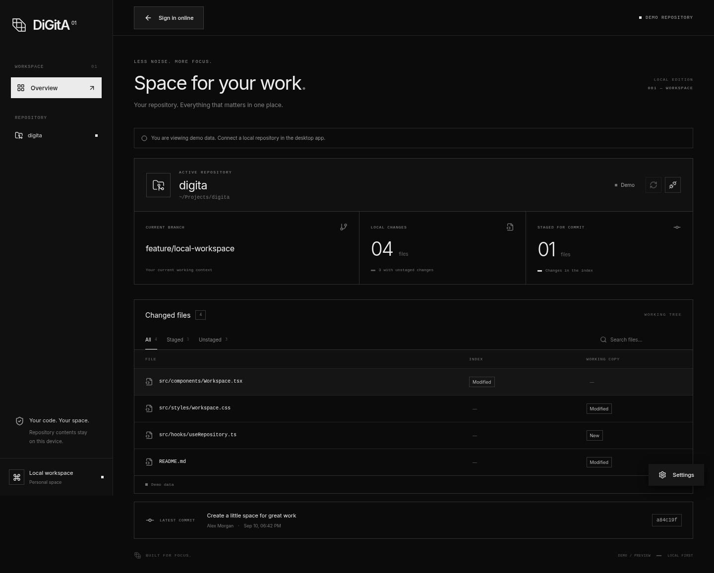

01
Start with your code.
Your branch, latest commit, and changed files. Staged and unstaged changes in a view that stays out of your way.
workspace.tsxM
next-idea.ts+
YOUR GIT. YOUR TEAM. YOUR FOCUS.
Stay close to your code and the people building it with you. Local Git and live collaboration in one desktop window.
ARCH LINUX x86_64 · DEVELOPMENT VERSION 0.1.0
01 / LESS SWITCHING. MORE CONTEXT.
From your first local change to working together.
See what matters before the next push.
Your branch, latest commit, and changed files. Staged and unstaged changes in a view that stays out of your way.
Conflict Radar flags shared changes to the same file in your room. Before you merge.
Team rooms, live activity, and a shared ambient track. You choose your volume and what you share.
A SMALL RITUAL. BETTER FOCUS.02 / YOUR OWN DESKTOP SPACE
Real interface. Demo data.
A clear overview without distractions.

YOUR CODE STAYS YOURS
DiGitA never sends source file contents. Collaboration uses metadata, and you choose whether teammates see your branch, file names, or commit message.
Explore the source03 / YOUR NEXT WORKSPACE
Download DiGitA, connect your repository,
and invite your team to a shared room.
Test package for current Arch Linux. Unsigned; installation on a clean system has not been verified yet.
Open a terminal in the download folder and run:
sudo pacman -U ./digita-0.1.0-1-x86_64.pkg.tar.zstThen launch DiGitA from your applications menu. Team collaboration requires an account and internet access; registration may be closed during the pilot.
04 / A FEW MORE ANSWERS
DiGitA is an installable desktop app built with React and Tauri. This website introduces the app and provides downloads. Once installed, the app opens in its own window.
The current version only reads your Git repository. Keep committing, pushing, and merging with your usual tools. DiGitA does not synchronize code contents.
Use the local repository overview without signing in. An account is needed for teams, invitations, and live rooms. Registration opens as needed during the closed pilot.
This is still a development pilot. Features may change and bugs may occur. The server may take a moment to wake after being idle. Conflict Radar flags file overlaps; it cannot predict every merge conflict.
Open an issue on GitHub and include the problem, app version, and operating system. Do not include passwords, tokens, or sensitive repository contents.